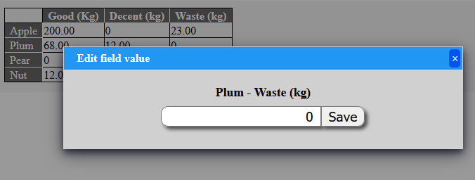
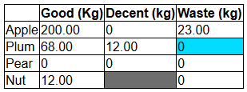

DynTable
The DynTable contains a previously defined collection of numeric or textual typed fields referenced by names.
You can get/set this elements as a simple object attribute or even do arithmetic operation on all of them or
store/load the whole object to/from database by simple api calls.
The DynTable class elements can be show or edit as a simple two dimensional html table with the specified column and row names.
The editing is achieved through ajax functions.

Because the DynTable class is inheritable in your codes, you can extend the functions of the base class to meet your special needs. The class contains many redefineable methods to easy extend base functions.
Let's see a simple example of DynTable
$definition = [
'rows' => [0 => 'Apple',1 => 'Plum',2 => 'Pear',3 => 'Nut',],
'cols' => [0 => 'Good (Kg)',1 => 'Decent (kg)',2 => 'Waste (kg)'],
'default_type' => 'num',
'datacells' => [
'applegood' => ['row' => 0,'col' => 0],
'appledecent' => ['row' => 0,'col' => 1],
'applewaste' => ['row' => 0,'col' => 2],
'plumgood' => ['row' => 1,'col' => 0],
'plumdecent' => ['row' => 1,'col' => 1],
'plumwaste' => ['row' => 1,'col' => 2],
'peargood' => ['row' => 2,'col' => 0],
'peardecent' => ['row' => 2,'col' => 1],
'pearwaste' => ['row' => 2,'col' => 2],
'nutgood' => ['row' => 3,'col' => 0],
'nutwaste' => ['row' => 3,'col' => 2],
],
'table_border' => '1',
];
$d = new DynTable($definition);
$d->zeroData();
$d->nutgood = 12;
$d->applegood = 200;
$d->applewaste = 23;
$d->plumgood = 68;
$d->plumdecent = 12;
print $d->getHtml();
The code above generates the following table in the browser

Methods of DynTable class
Constructor:
- DynTable($definition) - The constructor (
__construct) of DynTable- The constructor should receive the definition of the DynTable. The definition is an associative array with the appropriate fields. (explained later) The definition array describes the fields of the DynTable the parameters of database appearance and the look and feel options of the whole table.
Methods:
- zeroData()
- It resets the value of all defined fields. The string typed fields set to empty string while the numerical fields are set to zero.
- setReadonly($ro)
- The DynTable has a read only mode which means that the web interface not enables the editing of the cells. Keep in mind that this read only attribute only affects the web interface only. You will be able to save the table to the database through the api methods.
- Sets the read only status of the DynTable object.
- isReadonly()
- This method will returns the read only status of the current DynTable object. (
true: Read only) - See
setReadonly()for explanation what is read only.
- This method will returns the read only status of the current DynTable object. (
- isInSql()
- This method returns
trueif the DynTable object is present in the sql database. It means that you will receivetrueif you read the table from the database or already saved or stored it. Otherwise you will receivefalseif you created the object with the api but not stored it.
- This method returns
- arithmeticForAllNumeric($operation,$operand)
- Do the specified arithmetic operation on all number typed fields.
- The
$operationparameter is a string, can be the following values:'+'- Adds the$operandto each numeric type field.'-'- Subs the$operandfrom each numeric type field.'*'- Multiply each numeric type field with the$operand.'/'- Divide the each numeric type field by the$operand.
- collectForAllNumeric($operation)
- Calculate the required value from all numeric typed fields.
- The
$operationparameter is a string, can be the following values:'sum'- Searches/calculate the sum value of all numeric typed fields.'count'- Searches/calculate the number/count of all numeric typed fields.'nonzerocount'- Searches/calculate the number/count of all non zero valued numeric typed fields.'max'- Searches/calculate the maximum value of all numeric typed fields.'min'- Searches/calculate the minimum value of all numeric typed fields.'avg'- Searches/calculate the math average value of all numeric typed fields.
- getHtml($readonly = false, $skipheaders = false)
- Generate the html codes of the DynTable. The fields are shows in the rows/columns specified in the definition structure.
- By default this function generates an (popup ajax) editable table. If you set
$readonlyparametertruethe editing is disabled. - If you set
$skipheaderstotruethe function will not draw the column and row labels but the table body only. - This function is generate an unique html div container around the table code so that the ajax codes can refresh the table without reload the full page. The (replaced) inner code of the table is generated by
html_table_body()method. This mechanism is works automatic if you use theajax_add_refreshHtmlTable()method in your ajax handler to refresh the table.
- html_table_body($readonly = false, $skipheaders = false)
- Generated the inner body of the html codes of DynTable. Use
getHtml()andajax_add_refreshHtmlTable()instead of this except if you exactly know what you do.
- Generated the inner body of the html codes of DynTable. Use
- generateIntoTable($receiverobj,$skipheaders = false)
- This function fills the received HtmlTable or ExcelXmlDocument object with the data of DynTable according to the columns and rows.
- If the
$skipheadersparameter istruethe function generates a bare table only without the the row and column labels. - You can customise the generated table cell properties by set the
gentable_prefixed attributes in data definition array. (See below)
- setData($name,$toValue,$method = '')
- Sets the
$namenamed data cell to$toValuevalue. - The
$methodparameter is unused here. You can use it when you redefine this function in your subclass. This way you can determine the source of the change.- The dyntable setter method will call this function with method: "__set";
- Sets the
- setDataFromAjax($name,$toValue,$method = 'ajax')
- Sets a cell value according to the form name of the passed value. If a modification request received through ajax interface the cell names are prefixed with "dync_". This function can received this prefixed names and correctly calculate the normal cell name and set to a value by calling
setData(). So use this method to set data cell in your ajax handler. By default this method will call thesetData()internal method with "ajax" method string parameter.
- Sets a cell value according to the form name of the passed value. If a modification request received through ajax interface the cell names are prefixed with "dync_". This function can received this prefixed names and correctly calculate the normal cell name and set to a value by calling
- readFromDatabase($id)
- Read DynTable from sql database with
$idkey. - The DynTable object's current Id is available through
dyntable_idproperty. - It returns
falseon success read,trueif something goes wrong. (For example the give Id is not found)
- Read DynTable from sql database with
- saveToDatabase()
- Save the DynTable object to the database. It's only work when the id is set. (Already read or stored object)
- The DynTable object's current Id is available through
dyntable_idproperty.
- storeToDatabase()
- Store (insert) the DynTable object to the database. This method fills the id field after the insert.
- The DynTable object's current Id is available through
dyntable_idproperty.
- sql_create_schema()
- Creates the sql schema describe array of the DynTable. The generated array can directly used in
HOOK_required_sql_schemahook. - Example code in
hook_mymodule_required_sql_schema()body:return ['mydyntable_def' => $dt->sql_create_schema()];
- Creates the sql schema describe array of the DynTable. The generated array can directly used in
- ajax_add_refreshHtmlTable($readonly = false,$skipheaders = false)
- Use this function in your ajax handler to makes refresh the table in the browser.
- The parameters works same way as
getHtml()
The following methods does nothing, they can be re defined in subclasses to achieve special needs.
- html_table_body_before()
- The return of this method will be inserted before the DynTable html codes when generated with
html_table_body(). ThegenHtml()also usehtml_table_body()inside.
- The return of this method will be inserted before the DynTable html codes when generated with
- html_table_body_after()
- The return of this method will be put after the DynTable html codes when generated with
html_table_body(). ThegenHtml()also usehtml_table_body()inside.
- The return of this method will be put after the DynTable html codes when generated with
- generateIntoTable_before($receiverobj)
- This method runs before the
generateIntoTable()method start to generate the table. It received the same parameter thangenerateIntoTable()so the object can be modified here.
- This method runs before the
- generateIntoTable_after($receiverobj)
- This method runs after the
generateIntoTable()method end with generate the table. It received the same parameter thangenerateIntoTable()so the object can be modified here.
- This method runs after the
- readFromDatabase_preaction($queryobject)
- This method called immediately before the database query is executed which queries the DynTable.
- The method receive the (already set) DatabaseQuery object, so the redefined methods can modify it. (For example add more field queries).
- readFromDatabase_postaction($resultobject)
- This method called after the database query is executed and the field data is read from it. (from the query results).
- The method receive the array resulted by the query.
- saveToDatabase_preaction($queryobject)
- This method called immediately before the database save request is executed which save the DynTable.
- The method receive the (already set) DatabaseQuery object, so the redefined methods can modify it. (For example add more field to save).
- saveToDatabase_postaction()
- This method called after the database save is executed.
- storeToDatabase_preaction($queryobject)
- This method called immediately before the database store (insert) request is executed which save the DynTable.
- The method receive the (already set) DatabaseQuery object, so the redefined methods can modify it. (For example add more field to insert).
- storeToDatabase_postaction()
- This method called after the database store is executed.
Attributes of DynTable:
Every defined field is accessible for read and write as object attribute. Except that ones there are more attributes to read:
dyntable_id(Read only)- The Id of the DynTable. If you read the DynTable from the database the Id is same you gave to
readFromDatabase()If your created DynTable without database existence a temporally id is generated with "temp_" prefix. After success store the Id is set to database given value.
- The Id of the DynTable. If you read the DynTable from the database the Id is same you gave to
dyntable_definition(Read only)- You can read the data definition structure which passed to constructor.
Data definition structure
The data definition array is php associative array structure to driven DynTable object features, specify fields, look and feel, and other features of the generated tables or database values. This definition structure described here is passed to the constructor of DynTable. (Above)
The structure : Top level attributes
- Top level attributes
- Associated sql table
- Properties of sql record
- Look and feel of html table
- Features of ajax edit interface
- Features of popup ajax edit dialog
- Generated table properties
"rows" =>- Generated table row indexes and labels
"cols" =>- Generated table column indexes and labels
"datacells" =>- Contains array items, each is a single field where the index is the field name.
- The array value can contains optional elements to set some properties of the field.
- Type of the field
- Associated row and column
- Optional (different) sql name, if the sql field name is differs from the DynTable field name.
- The array value can contains optional elements to set some properties of the field.
- Contains array items, each is a single field where the index is the field name.
List of top level attributes/features:
"sqltable" => sql_table_name- The SQL table name in the database. This attribute is necessary if you intend to read/save this DynTable from/to database. If defined the DynTable values are appears as a record of the given named database table.
"idfield" => sql_table_primary_key- The name of the primary key of the related sql table. It must be an autoincrement type. (SERIAL)
- The Id of the DynTable is contains this value of the DynTable is loaded from the database or already stored.
"default_type" => typestring- Possible values:
"str"- String"num"- Number
- Specify the type of that fields where does not exact type specified.
- Possible values:
"sql_schema_bypass" => bool- You can add the data definition array to Data definition structure repository. Every data structure which present in that repository is examined on case where sql structure is checked by sql schema editor. If this bool value is present and
truethe structure will be skipped by schema editor.
- You can add the data definition array to Data definition structure repository. Every data structure which present in that repository is examined on case where sql structure is checked by sql schema editor. If this bool value is present and
"sqltype_numeric" => sqltype- In case you generated the required sql schema of the DynTable by
sql_create_schema()or through the definition structure repository the numeric typed fields will have the sql type given here. If this attribute is not set the numerical fields will be generated with"NUMERIC(15,5)"
- In case you generated the required sql schema of the DynTable by
"sqltype_string" => sqltype.- In case you generated the required sql schema of the DynTable by
sql_create_schema()or through the definition structure repository the string typed fields will have the sql type given here. If this attribute is not set the textual fields will be generated with"VARCHAR(128)"
- In case you generated the required sql schema of the DynTable by
"sqltype_idfield" => sqltype.- In case you generated the required sql schema of the DynTable by
sql_create_schema()or through the definition structure repository the Id field will have the sql type given here. If this attribute is not set the Id field will be generated with"SERIAL".
- In case you generated the required sql schema of the DynTable by
"table_seq_name" => sql_sequence_name- The sql sequence name related to the Id field. (Optional, It's only need if special key is generated)
"table_key_prefix" => keyprefix_string- A prefix string which prepend to the sql sequence generated value to generate the Id value. (Optional, It's only need if special key is generated)
"table_key_suffix" => keysuffix_string- A prefix string which append to the sql sequence generated value to generate the Id value. (Optional, It's only need if special key is generated)
"numeric_format_string" => formatstring- The Html generator function of the DynTable (
genHtml()) will generate the numerical typed field to the browser with this format string. The format string is the standard format string of phpsprintf(). The default value is"%.2f".
- The Html generator function of the DynTable (
"table_border" => numeric- This attribute is used when DynTable html code is generated by
genHtml(). - The given numeric value will be set as the border of the generated html table.
- This attribute is used when DynTable html code is generated by
"table_class" => string- This attribute is used when DynTable html code is generated by
genHtml(). - The given string value will be set as the css class of the (whole) generated html table.
- This attribute is used when DynTable html code is generated by
"table_rowlabel_class" => string- This attribute is used when DynTable html code is generated by
genHtml(). - The given string value will be set as the css class of the generated html table's row labels.
- This attribute is used when DynTable html code is generated by
"table_columnlabel_class" => string- This attribute is used when DynTable html code is generated by
genHtml(). - The given string value will be set as the css class of the generated html table's column labels.
- This attribute is used when DynTable html code is generated by
"table_cell_class" => string- This attribute is used when DynTable html code is generated by
genHtml(). - The given string value will be set as the css class of the generated html table's data cells (not column or row labels).
- This attribute is used when DynTable html code is generated by
"table_missing_cell_class" => string- This attribute is used when DynTable html code is generated by
genHtml(). - The given string value will be set as the css class of the generated html table's data not defined (empty) cells.
- This attribute is used when DynTable html code is generated by
"gentable_colheader_opts" => array- This attribute is used when the DynTable is generated into HtmlTable or ExcelXmlDocument object.
- The given options array is set for column header cells. See the
opts()method of HtmlTable .
"gentable_rowheader_opts" => array- This attribute is used when the DynTable is generated into HtmlTable or ExcelXmlDocument object.
- The given options array is set for row label cells. See the
opts()method of HtmlTable .
"gentable_strcell_opts" => array- This attribute is used when the DynTable is generated into HtmlTable or ExcelXmlDocument object.
- The given options array is set for textual cells. (Where
"type"=>"str"is set) See theopts()method of HtmlTable .
"gentable_numcell_opts" => array- This attribute is used when the DynTable is generated into HtmlTable or ExcelXmlDocument object.
- The given options array is set for numerical cells. (Where
"type"=>"num"is set) See theopts()method of HtmlTable .
"gentable_misscell_opts" => array- This attribute is used when the DynTable is generated into HtmlTable or ExcelXmlDocument object.
- The given options array is set for missing cells. (Where not data is shown) See the
opts()method of HtmlTable .
"popupedit_title" => string- The title string of the popup dialog in case of the DynTable values are edited through the ajax editor.
"popupedit_btntext" => string- The "save" button text of the popup dialog in case of the DynTable values are edited through the ajax editor.
"popupedit_ajaxurl" => urlstring- The url of the ajax handler which requested by the popup dialog in case of the DynTable values are edited. You should provide this ajax handler (and the url) to make DynTable editable.
"popupedit_ajaxsubtype" => string- The ajax handler (set by previous settings) will receive this helper string value. This value is usable for distinct different save request of different DynTables.
"rows" => associative_array- Here you can specify the rows of the DynTable. The array should contains numerical indexes and the textual label values. (See example above)
"cols" = associative_array- Here you can specify the columns of the DynTable. The array should contains numerical indexes and the textual label values. (See example above)
"datacells" = associative array- The fields of the DynTable is defined here by the given associative array where the index strings are the names of the fields. The values of the array items are arrays, where the following optional options can be present:
"row" => row_index_number- The field will be put in this row."col" => column_index_number- The field will be put under this column label."sql" => redefined_sql_name- If you specified this attribute the field will be referenced with this sql name."type" => type_of_the_field- Can be"num"orstr.
- The fields of the DynTable is defined here by the given associative array where the index strings are the names of the fields. The values of the array items are arrays, where the following optional options can be present:
Data definition structure repository
You can add the data definition array of DynTable to the same repository as SpeedForm definitions.
Use the same HOOK_datadef_repository hook to add a data definition structure to
the repository, see documentation here.
You can use the same datadef_from_repository('repository_name') function to get the definition.
Note: The definition which are stored in the repository will be processed by sql schema requisites check tool unless
you set the sql_schema_bypass toplevel attribute to true !
A complex example
Let's see a complex example of using DynTable. Here we will define a DynTable and build an edit interface which immediately store the edited table to the database.
First of all, let's put the definition of our DynTable to the data definition structure repository:
function hook_mymodule_datadef_repository()
{
return [
'fruitsdef' => 'generate_fruits_def',
];
}
function generate_fruits_def()
{
return [
'sqltable' => 'fruit_harvest',
'idfield' => 'year',
'table_border' => '1',
'popupedit_ajaxurl' => 'ajaxfruitedit',
'popupedit_ajaxsubtype' => 'fruits',
'popupedit_title' => 'Set the selected item',
'popupedit_btntext' => 'Modify',
'rows' => [
0 => 'Apple',
1 => 'Plum',
2 => 'Pear',
3 => 'Nut',
],
'cols' => [
0 => 'Good (Kg)',
1 => 'Decent (kg)',
2 => 'Waste (kg)'
],
'default_type' => 'num',
'datacells' => [
'applegood' => ['row' => 0, 'col' => 0],
'appledecent' => ['row' => 0, 'col' => 1],
'applewaste' => ['row' => 0, 'col' => 2],
'plumgood' => ['row' => 1, 'col' => 0],
'plumdecent' => ['row' => 1, 'col' => 1],
'plumwaste' => ['row' => 1, 'col' => 2],
'peargood' => ['row' => 2, 'col' => 0],
'peardecent' => ['row' => 2, 'col' => 1],
'pearwaste' => ['row' => 2, 'col' => 2],
'nutgood' => ['row' => 3, 'col' => 0],
'nutwaste' => ['row' => 3, 'col' => 2],
],
];
}
Now we have our definition in the repository, let's create a page where we put an edit page for one instance of the table. The Id is received in url parameter.
function hook_mymodule_defineroute()
{
$r = [];
$r[] = [
'path' => 'editfruittable/{id}',
'callback' => 'pc_editfruittable',
];
$r[] = [
"path" => "ajaxfruitedit",
"callback" => 'aj_fruitedit',
"type" => "ajax",
];
return $r;
}
function pc_editfruittable()
{
par_def('id','number0');
ob_start();
print "My DynTable:<br/>";
$d = new DynTable(datadef_from_repository('fruitsdef'));
$d->readFromDatabase(par('id'));
print $d->getHtml();
return ob_get_clean();
}
Here comes the ajax handler which save the edited value to the database and update the table in the browser.
function aj_fruitedit()
{
par_def('subtype','text1ns');
par_def('value','textbase64');
par_def('modname','text1ns');
par_def('id','text1ns');
$subtype = par('subtype');
$mname = par('modname');
$mvalue = base64_decode(par('value'));
$id = par('id');
if($subtype == 'fruits')
{
$dmod = new DynTable(datadef_from_repository('fruitsdef'));
if(!$dmod->readFromDatabase($id))
{
$dmod->setDataFromAjax($mname, floatval($mvalue), 'fromajax');
$dmod->saveToDatabase();
$dmod->ajax_add_refreshHtmlTable(false);
return;
}
load_loc('error','Error, ...');
}
}